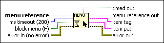

Get Menu Selection Function
Owning Palette: Menu Functions
Requires: Base Development System
Returns the item tag of the last selected menu item, optionally waiting ms timeout milliseconds.
If you use this function with an Event structure configured to handle the same menu item, the Event structure takes precedence and LabVIEW ignores the Get Menu Selection function. In any given VI, use the Event structure or the Get Menu Selection function.
(Real-Time Module) You cannot use this function in VIs that run on RT targets.

 Add to the block diagram Add to the block diagram |
 Find on the palette Find on the palette |